Each section has three levels. The everyday picture is shown open. The physics and the sources fold out beneath it. Every statement carries its standing: exact, measured, a lead, or tested and rejected. The physicists whose results are used are named where they are used and listed on the References page.
One geometry: a cube balanced on one corner
The everyday picture
Stand a cube on one corner. Three edges rise from that corner, one for each family of particles. The line straight up through the middle is the place where all three families would weigh the same. Nothing in nature sits exactly on that line, and nothing sits exactly on an edge. Each kind of particle leans away from the middle line by its own fixed angle, so it traces a cone.
The electron's kind leans by exactly 45°. That is halfway between the two natural resting places of the cube, an edge and the diagonal of a face. The quarks lean a little further, toward the edges. The neutrinos lean less.

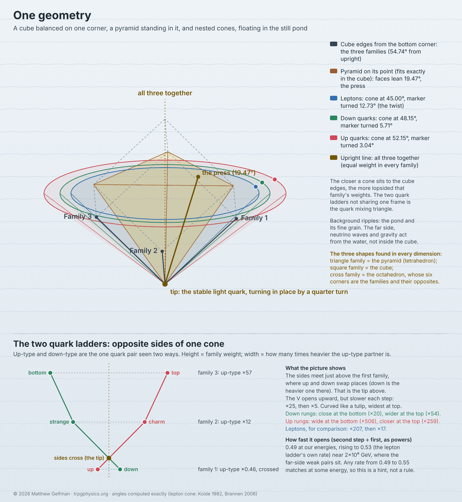
The physics
Take the square roots of the three energies of one ladder (for example electron, muon, tau) as a vector along the three cube edges. Its angle from the body diagonal is the ladder's opening. The values are 45.00° for the charged leptons, 48.15° for the down-type quarks, 52.15° for the up-type quarks and about 37° for the neutrinos. The cube's own special lines sit at 0° (body diagonal, all equal), 35.26° (face diagonal, two heavy) and 54.74° (edge, one heavy). The lepton value is the exact midpoint of the last two.
The opening obeys one exact relation for every ladder: tan(opening) = √2 × (link between members) ÷ (self value). The turn of the vector around the body diagonal is the twist: 12.73° for the leptons (2/9 of a radian), about 6° for the down-type quarks, about 3° for the up-type quarks and about 21° for the neutrinos. Seen from above, all four ladders lie along one side of a triangle, and that side misses the centre. So distance from the centre and twist change together: the pulls are opposing but not opposite.
For specialists: sources and what was checked
The 45° relation is Koide's (1982), in the cone form of Foot (1994) and with the twist of Brannen (2006). That the natural resting places of such invariants are "one heavy", "two heavy" and "all equal" is the result of Michel and Radicati (1971), applied to flavour by Alonso, Gavela, Isidori and Maiani (2013). Checked here: the quarks sitting near an edge together with small mixing occurred in 0 of 200,000 random trials. Not derived: the size of each opening, each twist, and the mixing angles. No rotation of the cube can fix an unequal ratio of weights (Schur's lemma), so those numbers need a rule for displacement, which is still missing.
Where it stands. The geometry is exact. The opening and twist of each ladder are measured numbers placed in it, except the lepton 45°, which is a stated rule of the framework.
Every particle placed in the one picture
The everyday picture
Height in the picture is energy. Direction around the middle is family. The size of each bubble is the size of that particle's own wave. Our side of the picture holds everything that has been met in a laboratory. The turned-over upper half holds the far side: partners the mathematics requires, which are too heavy to have been made in any experiment so far.
Turning the whole picture through its centre swaps every particle for its opposite and runs time the other way. That one move leaves the laws exactly the same.

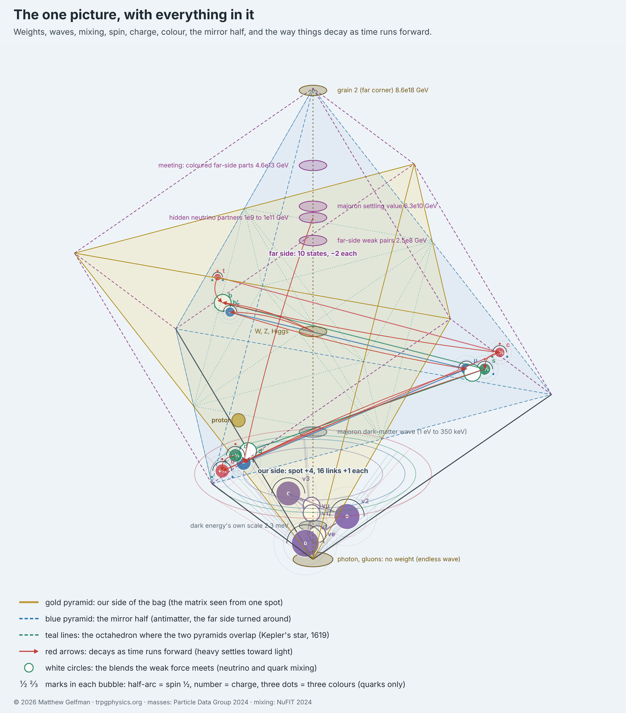
The physics
The relationship matrix has 27 places. Seen from one spot they split 1 + 16 + 10: the spot itself, the sixteen states of one family on our side, and ten states on the far side (three colourless weak pairs and coloured partners, per family). The observer's facing splits the eight octonion directions into two colourless and six coloured, which is the strong force with three colours.
Point reflection through the centre of the picture exchanges the two pyramids. It is the combined operation CPT, which is an exact symmetry. Reversing time alone is not.
For specialists: sources and what was checked
The 1 + 16 + 10 split is the standard decomposition of the 27 of E₆ under SO(10) (Gürsey, Ramond and Sikivie, 1976). The CPT theorem is due to Lüders (1954) and Pauli (1955); reading an antiparticle as the same wave followed backwards in time is due to Stueckelberg (1941) and Feynman (1949). The picture adds no new claim. It places the framework's existing content in one frame so that gaps can be seen.
Where it stands. A picture of results already on the Results page. Everything still open sits on the far side or is a single angle in this frame.
What is experienced, and what is a concept
The everyday picture
Some entries in physics are things. An electron leaves a click, a proton leaves a track, light lands on the eye. Other entries are concepts: an angle, a count of three, a mirror. Mixing the two causes most of the confusion.
Drawn separately, a pattern appears. Everything that has been directly experienced is explained. Every question still open is either a concept (why this angle, why this twist) or a thing the framework claims and nobody has met yet.

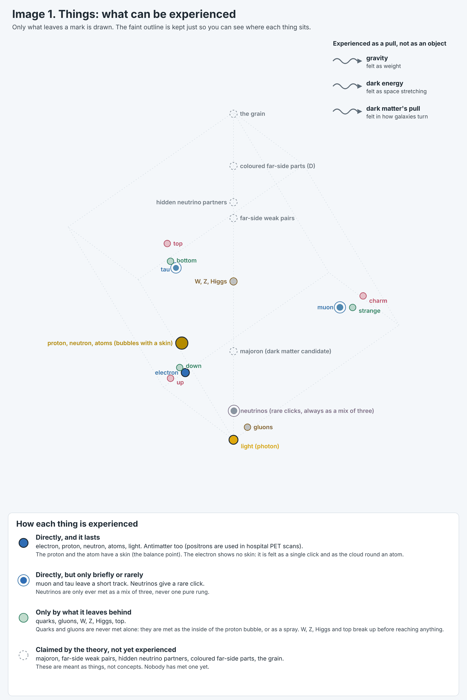

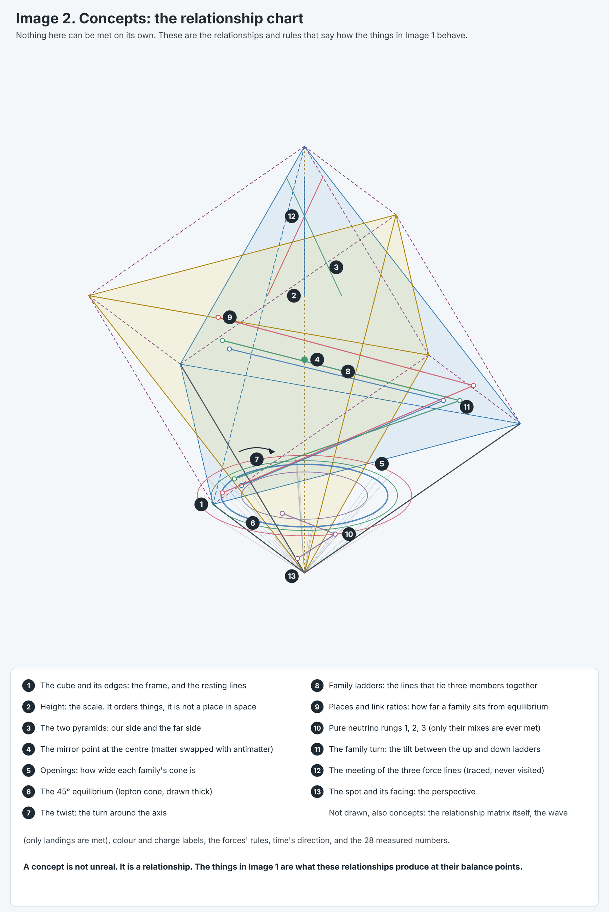
The physics
Directly experienced and lasting: the electron, proton, neutron, atoms and light. Experienced briefly: the muon and tau, and the neutrinos as rare events, always as a mixture of the three. Known only by what they leave behind: quarks and gluons (never alone), the W, Z, Higgs and top. Claimed and not yet experienced: the majoron, the far-side weak pairs, the hidden neutrino partners, the coloured far-side parts and the grain. Gravity, dark energy and dark matter's pull are experienced as pulls, not as objects.
In each family only the first rung lasts. The second and third rungs are left behind for a moment and then fall to the first. The neutrinos are the exception: one thing spread over three rungs.
For specialists: sources and what was checked
The classification follows what detectors record (Particle Data Group, 2024). It is a sorting, not a derivation. Its use is to show where the remaining work is: the openings, the twists, the press on the down-type quarks and the amount of dark matter are all directions and angles, not energies.
Where it stands. Holds as a classification. It moves no item on the scorecard.
Atoms, nuclei and protons: rings of balance
The everyday picture
A planet, an atom and a proton are each a group of balance points pressed together, like bubbles squashed against each other. The weight of the whole is the sum of the balances, lowered a little by the squash.
There are three rings because there are three pulls that bind. The electric pull holds the atom. The pull that leaks out of protons and neutrons holds the nucleus. The strong pull holds the proton and the neutron themselves. The other two links in nature, the weak force and the link that gives weight, bind nothing, so they make no ring.

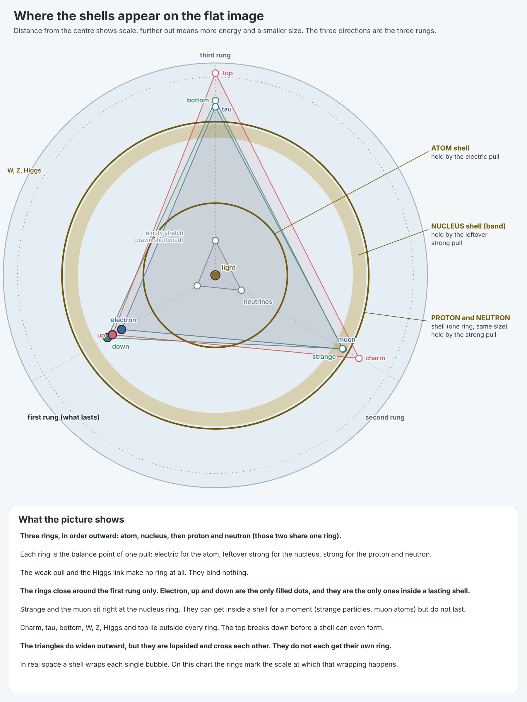

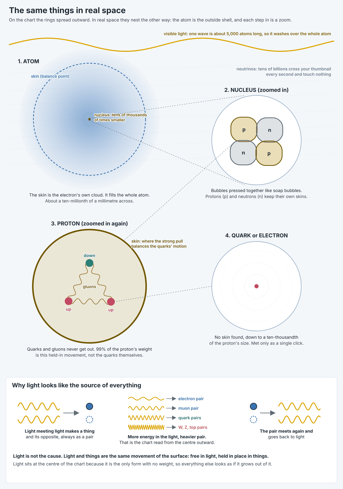
The physics
Each ring is placed at its measured size, converted to an energy by ħc ÷ radius: the atom at 3.7 keV (the Bohr radius), nuclei at 27 to 164 MeV, and the proton and neutron at 235 MeV (0.84 fm). The rings close round the first rung only, because only first-rung particles last long enough to be bound. The strange quark and the muon sit near the nuclear ring and can be bound briefly (hypernuclei, muonic atoms).
About 99% of the weight of ordinary matter is the proton's balance between containment and leakage. The rest is the one balance of the Higgs field.
For specialists: sources and what was checked
Sizes: CODATA and the Particle Data Group. The proton as a balance of containment against the pressure inside is the bag model of Chodos, Jaffe, Johnson, Thorn and Weisskopf (1974). The nuclear force as shared leakage is Yukawa's pion exchange (1935). Tested and rejected: one ring for each family. The rings belong to the pulls, not to the families.
Where it stands. Holds. The picture is established physics arranged in the framework's frame.
Light, the surface, and weight
The everyday picture
Picture space as a still surface. Light is the surface moving. A single wave of light weighs nothing. Two waves of light that meet at an angle do have a weight together, and the weight is greatest when they meet head on. So weight is a byproduct of movements that oppose each other and are held at a balance point.
The surface also resists. A wave that grips the surface is slowed, and that slowing is its weight. Weight equals the particle's grip multiplied by the surface's one resistance value. The top quark grips almost fully. The electron grips three parts in a million.

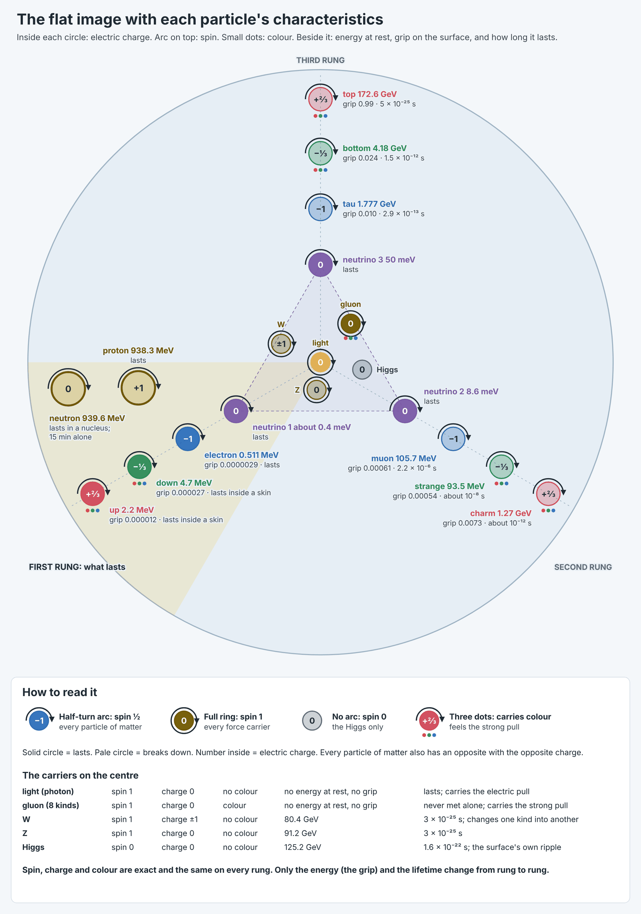
The physics
Two light waves of energies E₁ and E₂ meeting at angle θ have the combined rest energy √(2E₁E₂(1 − cos θ)): zero when parallel, largest when head on. Light meeting light has been seen to make electron, muon, tau and W pairs, and the Higgs was found through its decay to two photons. It always makes pairs, a thing and its opposite, so light alone cannot be the source of the excess of matter.
The resistance of the surface is the settled value of the Higgs field, 246 GeV. For the W this gives (weak strength × 246 GeV) ÷ 2 = 80.2 GeV against 80.37 measured. Each particle has one energy number. The factor c² is already inside every number quoted in electron-volts and cancels in every ratio.
For specialists: sources and what was checked
The two-photon rest energy is special relativity (Einstein, 1905). Light on light: Breit and Wheeler (1934), observed by ATLAS and CMS. Weight as slowed light in a resisting medium is the mechanism of Anderson (1963), Englert and Brout (1964), Higgs (1964) and Guralnik, Hagen and Kibble (1964). Wheeler's geons and de Broglie's matter waves are earlier forms of the same picture. Still open: why the grips differ. They are the measured numbers of the framework.
Where it stands. Holds exactly as established physics. The grips themselves are measured, not derived.
The far side: hidden partners and the MMG
The everyday picture
Each neutrino has a hidden partner on the far side. The lighter the neutrino, the heavier its partner, with the electron's kind as the mirror between them. That is why neutrinos are so light.
The far side also holds three more states, one per family, with no colour. The measured strengths of the forces only meet at one point if these states exist at a particular energy. This is the same reasoning by which Le Verrier found Neptune: the known bodies do not move as they should, so something of a definite size must be there. The framework names these states the MMG, for Mass Mirrored by Gravity, because their weight comes only through the grain of space.

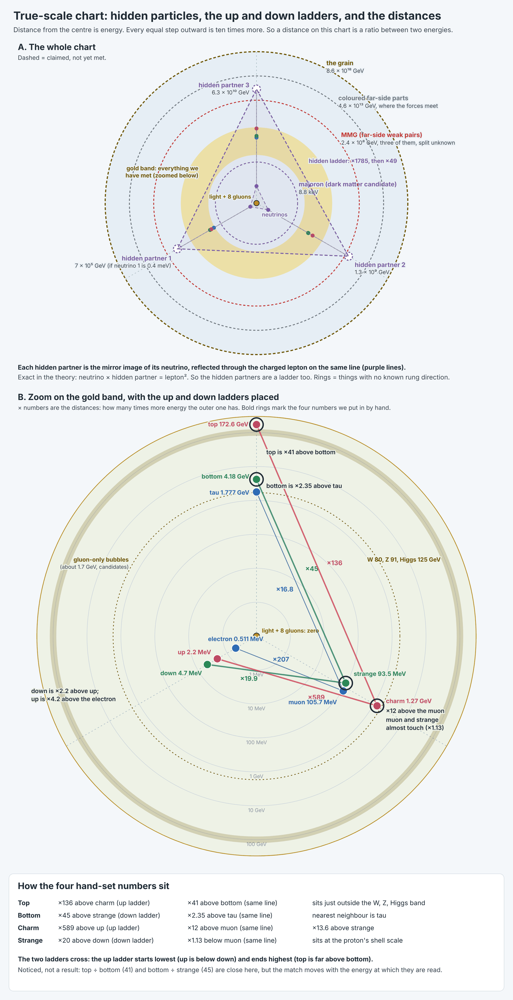

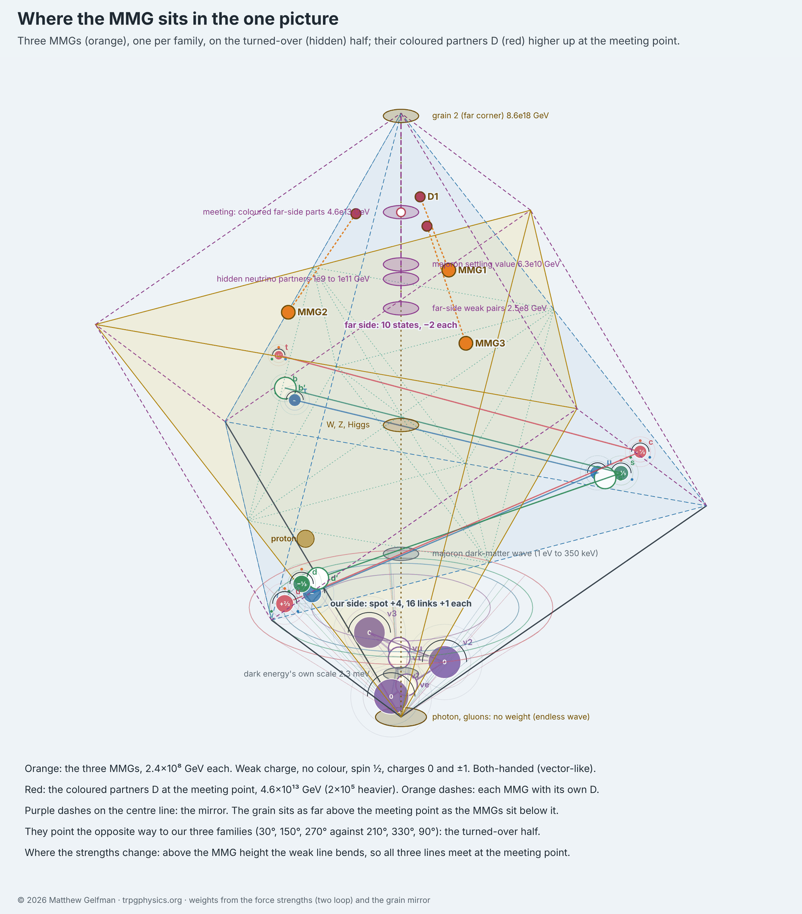
The physics
On every rung, neutrino × hidden partner = (charged lepton)². With a lightest neutrino of 0.36 meV and no mixing, the partners would sit at 7.3 × 10⁵, 1.3 × 10⁹ and 6.3 × 10¹⁰ GeV; the full three-by-three calculation with the measured mixing gives 0.6–1.9 × 10⁵, 2.2–6.2 × 10⁸ and 1.3–1.65 × 10¹² GeV. The hidden partners therefore form a ladder of their own, with each step equal to the lepton step squared divided by the neutrino step.
The MMG are three spin-½ weak pairs with charges 0 and ±1 and no colour. The force strengths, run at two loops, require them near 2.2 × 10⁸ GeV. The mirror relation MMG × grain = D², with the coloured partners D at 4.6 × 10¹³ GeV where the strengths meet, gives 2.4 × 10⁸ GeV, in agreement. With them the three strengths meet, and the proton stays stable. Within the framework, the reason the MMG weigh only through the grain now follows from two of its rules: the observer's facing acts on the far side only through its coloured parts, and nothing extra may be added.
For specialists: sources and what was checked
The mirror relation for neutrinos is the seesaw of Minkowski (1977), Yanagida (1979) and Gell-Mann, Ramond and Slansky (1979). Weight given only to the far-side parts that carry matter number is the mechanism of Dimopoulos and Wilczek (1981); the suppressed weight of the partner follows Masiero, Nanopoulos, Tamvakis and Yanagida (1982) and Grinstein (1982). The colour split of the octonions is Günaydin and Gürsey (1973). The MMG resemble the Higgsinos of split supersymmetry (Arkani-Hamed and Dimopoulos, 2005) without the rest of supersymmetry. Test: the strengths meet with the MMG only if the strong coupling is 0.1178. The current world average is 0.1180 ± 0.0009 (Particle Data Group, 2024) and the most precise single determination is 0.11873 ± 0.00056 (Dalla Brida and others, ALPHA collaboration, 2025); a more precise value will decide.
Where it stands. Awaiting measurement. The force-groups item on the scorecard stays PARTIAL, and this is not counted as established, until the strong-coupling measurement returns.
The ladders are waves on a spiral, not triangles
The everyday picture
Three particles of one kind are usually drawn as a triangle. They are better drawn as three places on one wave that winds round a cone, a third of a turn apart. The winding has been part of this framework from the start. What was ruled out is only the evenly spaced spiral. The real one tightens as it climbs.
Followed by its own rule, each spiral stops. The neutrino, lepton and hidden spirals rise from the surface and level off at a ceiling. The down-type quarks alone run the other way: they come down from the grain and level off at a floor.

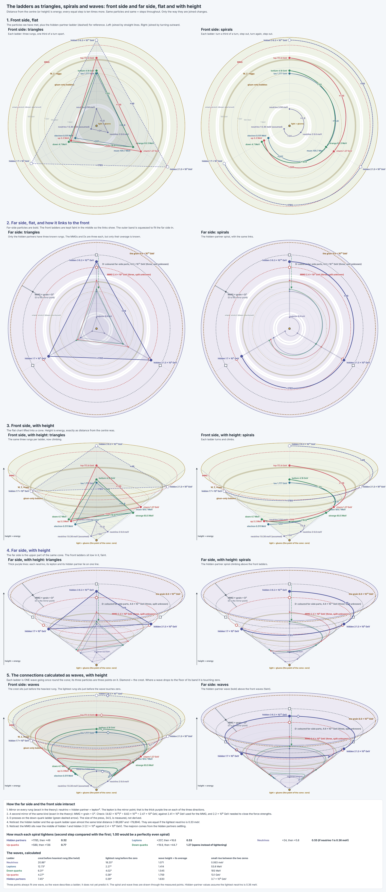

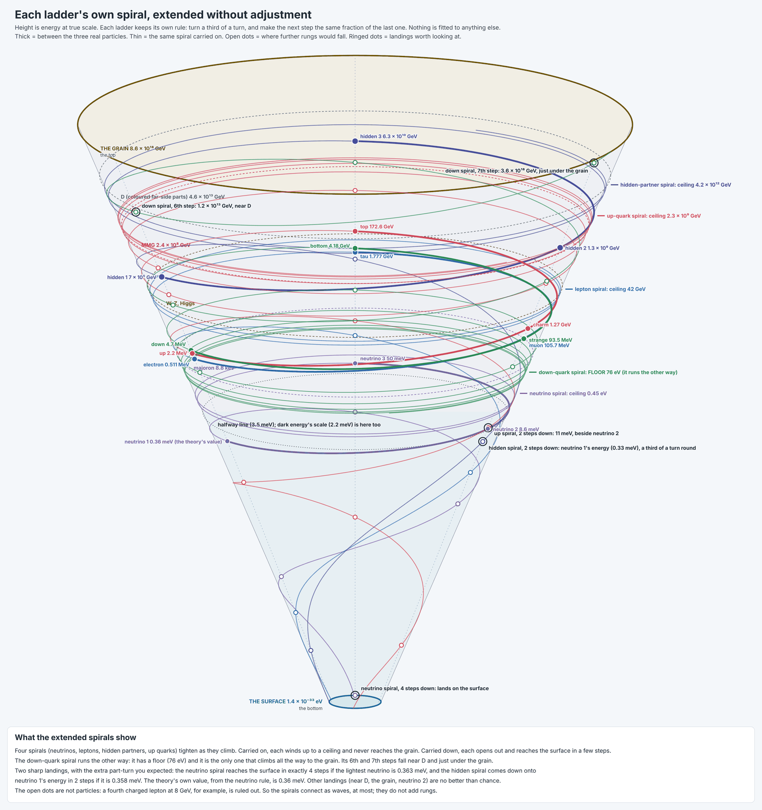
The physics
For every ladder, √(energy) = A × (1 + e × cos(phase)), with the three members 120° apart. The twist is how far the crest sits before the heaviest member. The lightest member always sits just before the wave's zero, which is why it is so light.
The tightening, the ratio of the second step to the first on a scale of tens, is 0.52 for the hidden partners, 0.53 for the leptons and 0.55 for the neutrinos: the three colourless ladders tighten alike. The up-type quarks have 0.77 and the down-type quarks 1.27. Continued by that rule the ceilings are 0.45 eV, 42 GeV, 2.3 × 10⁹ GeV and 4.2 × 10¹² GeV, and the down-type floor is 76 eV. Two landings stand out. The neutrino spiral reaches the surface in four steps if the lightest neutrino is 0.363 meV, and the hidden spiral lands on that neutrino's energy if it is 0.358 meV. The framework's own value, from a separate rule, is 0.36 meV. The fourth step is very long, so the errors on the measured neutrino splittings alone move the first landing by a factor of about 20.
For specialists: sources and what was checked
The wave form is Koide's relation in Brannen's parametrisation (2006), extended here to all five ladders. The rotation formula x′ = x cos θ − y sin θ, y′ = x sin θ + y cos θ reproduces each ladder exactly. Tested and rejected: an even spiral; a Möbius band for a single ladder (the true half-turn flip in nature is spin ½, shown with neutrons by Rauch and by Werner in 1975); and a general rule that the continued spirals connect to each other (9 of 43 landings, which is the rate expected by chance). The two landings are loose for that reason and are not shown to be independent of the rule that sets 0.36 meV, so they are a hint and not a result. The extra rungs of a continued spiral are not predicted particles.
Where it stands. The wave form is exact. The shared tightening is a lead. The two landings at 0.36 meV are a hint.
Waves within a wave, between the surface and the grain
The everyday picture
Turn a radio dial and one station comes in. The other stations have not gone anywhere. A particle is like that: waves within a wave, and what is met from one place at one setting is a single coordinate on a wave of waves.
The waves live between two ends. The smallest possible wave is one grain of space long. The largest is as long as everything that can be observed. Antimatter is the same wave at the same height, wound the other way. When the two meet, the winding cancels and the energy stays, as light. That is why antimatter cancels matter and the result is never nothing.

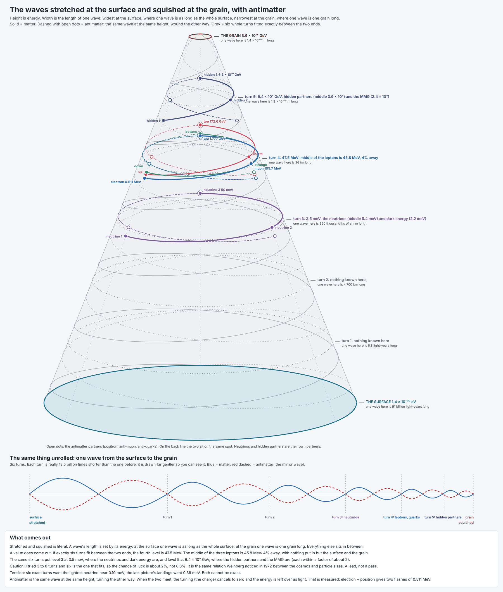

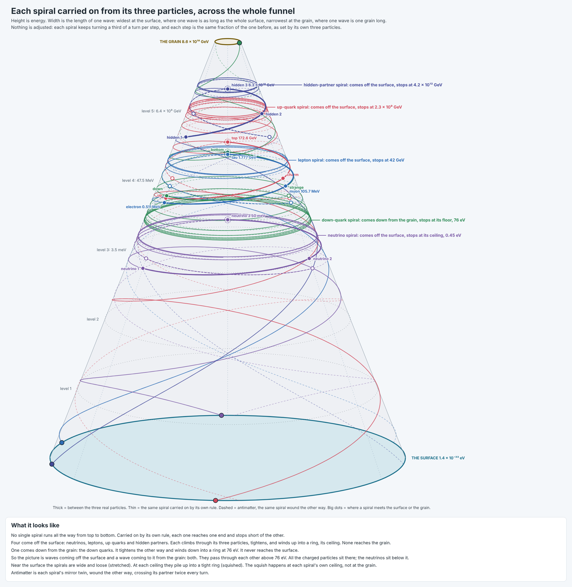
The physics
The grain is the Planck energy ÷ √2 = 8.6 × 10¹⁸ GeV, a wavelength of 1.4 × 10⁻³⁴ m. The surface is ħH₀ = 1.4 × 10⁻³³ eV, a wavelength of 8.6 × 10²⁶ m, about 91 billion light-years. Between them lie 60.8 tens. The framework takes the size of the energy of empty space from these two ends together: √(grain × surface) = 3.5 meV, against 2.2 meV measured for dark energy. The agreement in size follows from the Friedmann equation, so the amount is still counted as measured.
Neutrinos, charged leptons and hidden partners are three copies of one cone, each 9.9 tens above the last. A fourth copy would lie above the grain, so there is none. If exactly six whole turns fit between the ends, the fourth level is grain2/3 × surface1/3 = 47.5 MeV, against the middle of the lepton ladder at 45.8 MeV; the third is 3.5 meV, where the neutrinos and dark energy sit; the fifth is 6.4 × 10⁸ GeV, where the hidden partners and the MMG sit.
For specialists: sources and what was checked
E = hf is Planck (1900) and Einstein (1905); matter waves are de Broglie (1924); neutrino flavours as beats between waves are Pontecorvo (1957) and Maki, Nakagawa and Sakata (1962). Antimatter as the counter-wound solution is Dirac (1928). The energy of empty space set jointly by the smallest and largest scales is the bound of Cohen, Kaplan and Nelson (1999). The 47.5 MeV level is the relation Weinberg noted in 1972, in the line of Dirac's large numbers (1937). The six-turn fit is a lead: the chance of a match this close after trying three to eight turns is about 2%, and exact sixths would want a lightest neutrino of 0.10 meV, in tension with 0.36. Tested and rejected: ladders bunching at the grain itself.
Where it stands. The radio picture and the antimatter reading hold. The six-turn fit is a lead with a stated tension.
Where the forces are on the spirals
The everyday picture
The spirals are the things. The forces are not on a spiral. One link runs along each spiral: the link that gives weight, so a rung's height is its grip. The weak force is the hop between two spirals. It turns an up-kind into a down-kind and an electron-kind into its neutrino. The strong and electric pulls, the two that bind, ring the first rungs: they make the proton and the atom. Gravity is not a mark on the cone at all. It is the cone.

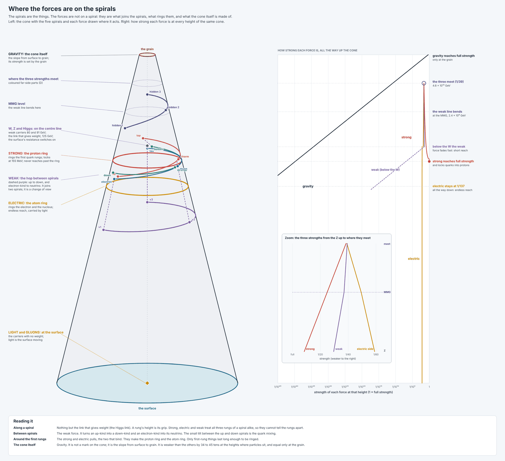
The physics
The strong, electric and weak forces treat the three rungs of a ladder alike, so they cannot tell the rungs apart; only the Higgs link can. The small tilt between the up-type and down-type spirals is the quark mixing matrix, which is the matrix of the W. The carriers with weight sit on the centre line at 80, 91 and 125 GeV. Light and the gluons have no weight and sit at the surface.
The right-hand panel shows each strength against height. The electric strength stays near 1/137 all the way down, which is why its reach is endless. The strong force reaches full strength at the proton ring and locks the quarks in. The weak force fades quickly below the W. Going up, the three approach each other and meet near 4.6 × 10¹³ GeV at about 1/39, with the weak line bending at the far-side weak pairs. Gravity's strength grows as the square of the energy: it is 34 to 45 tens weaker than the others where the particles sit and reaches full strength only at the grain.
For specialists: sources and what was checked
The change of each strength with energy is the running found by Gross and Wilczek and by Politzer (1973) for the strong force, and by Georgi, Quinn and Weinberg (1974) for all three together. The lines are drawn at one loop for clarity; the framework's quoted numbers use two loops. The meeting depends on the far-side weak pairs, which is the lead described above. Family-blind forces and a family-telling Higgs link are the Standard Model of Glashow, Weinberg and Salam; the mixing matrix is that of Cabibbo (1963) and Kobayashi and Maskawa (1973).
Where it stands. A placement of established physics on the cone. The meeting of the three strengths is the lead of the far-side section.
Particles created out of the spiral
The everyday picture
Before the light, the universe was cold and dark, with its energy held. Then the light began, part of the way up the cone, and it has stretched down the cone ever since as space grows. While the light is above a particle's level it keeps making that particle. Once the light has stretched below that level it cannot, and that kind drops out. What is left of it stays behind as a held thing.
Light keeps stretching because it is all movement. A proton, an electron or an atom is energy held at a balance point, and held energy does not stretch. So the things stay at their levels while the light goes on down. Today the light has come 52% of the way.

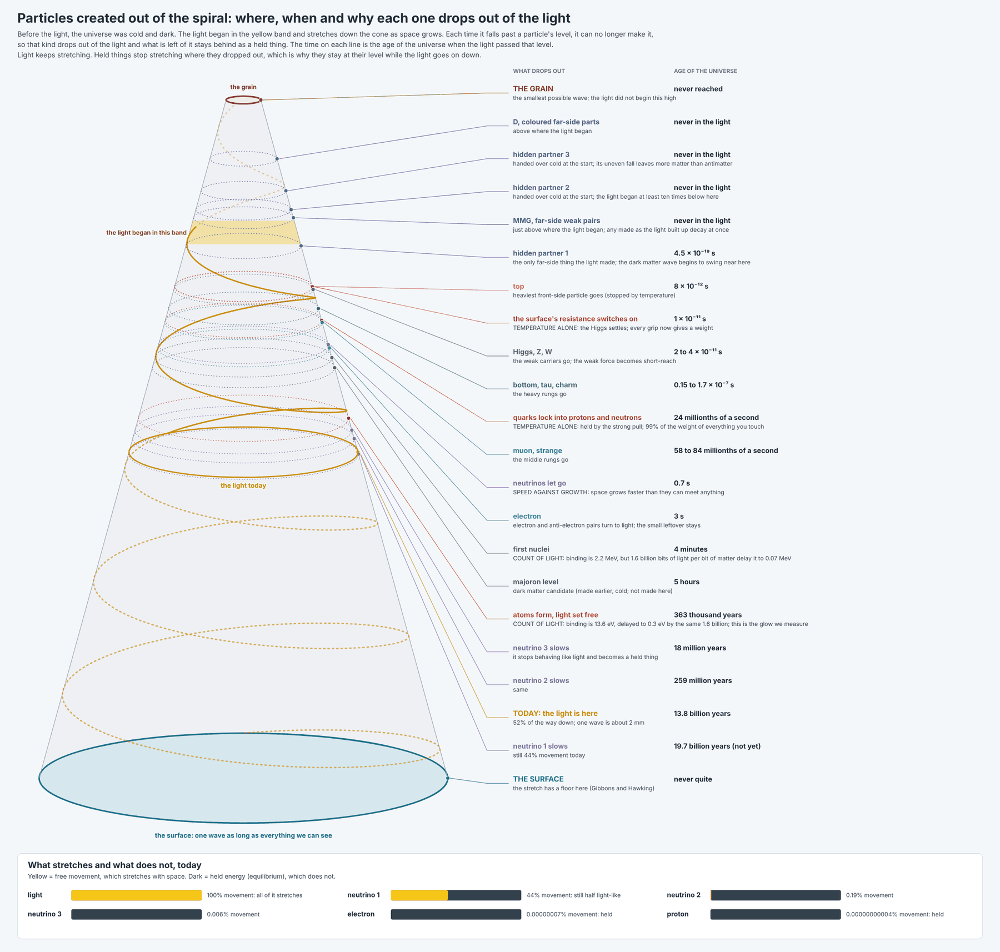
The physics
Age of the universe when the light passed each level: the top quark at 8 × 10⁻¹² s; the Higgs field settles, switching on the surface's resistance, at 10⁻¹¹ s; the W and Z by 4 × 10⁻¹¹ s; bottom, tau and charm by 2 × 10⁻⁷ s; quarks lock into protons and neutrons at 24 millionths of a second; the neutrinos let go at 0.7 s; the electron at 3 s; the first nuclei at 4 minutes; atoms form and the light is set free at 363 thousand years. The level tells when, not where: each kind drops out everywhere at once.
The level is the temperature of the light, and three different things stop a creation. Temperature alone melts a balance point: the proton above 155 MeV, the settled Higgs field above 160 GeV. Speed against the growth of space releases the neutrinos at about 1 MeV, which has nothing to do with their own energy. The count of light against matter delays the rest: nuclei bind at 2.2 MeV but hold only below 0.07 MeV, and atoms bind at 13.6 eV but hold only below 0.3 eV, because there are 1.6 billion bits of light for every bit of matter. That one number is the matter excess, read off the timeline twice.
Within the framework the light began between about 10⁶ and 10⁸ GeV, at an age between about 10⁻¹⁹ and 10⁻²³ s, at least ten times below the middle hidden partner. The far-side weak pairs lie just above the band; they cannot be stable, since any made as the light built up would outweigh everything else today, so they decay at once through a very weak link. The two heavier hidden partners lie above the band: they are handed over cold at the start, and their uneven fall leaves the excess of matter. The lightest hidden partner is the only far-side thing the light itself makes; it erases about a third of that excess.
Expansion lowers only momentum. Share of each relic that is free movement today: light 100%; the lightest neutrino 44%; the second 0.19%; the third 0.006%; the electron and the proton less than a billionth. The lightest neutrino is still half light-like and does not fully settle for about another six billion years. A grain-length wave stretched by expansion alone would be 1.6 cm long today. The measured glow is about 2 mm, because each kind that dropped out handed its energy back to the light. The stretch has a floor at the surface's own glow, 1.9 × 10⁻³⁴ eV.
For specialists: sources and what was checked
The thermal history is the work of Lemaître (1927), Gamow, Alpher and Herman (1948), and Weinberg and others; the glow was found by Penzias and Wilson (1965) and its temperature fixed by COBE. The floor is the result of Gibbons and Hawking (1977). The delay of nuclei and atoms by the count of light is Saha's equation (1920) and the deuterium bottleneck of Peebles (1966) and Wagoner, Fowler and Hoyle (1967); release by rate against expansion is Gamow's criterion. The limit on an excess made by the lightest partner is Davidson and Ibarra (2002). Limits: where in the band the light began is not derived, and neither is the share of energy handed to the hidden partners at the start. The calculation dates each level. It does not derive the levels. The framework holds no extra energy before atoms formed, so it sides with the lower, early value of the Hubble constant.
Where it stands. Holds as established cosmology in the framework's frame. It moves no item on the scorecard.
What was tested and did not hold
A result that can be proven wrong inside the framework is recorded as failed. These were tested for this page and rejected.
| Idea tested | Why it failed |
|---|---|
| An evenly spaced spiral for the ladders | The steps are not equal. Only the tightening spiral fits. |
| A Möbius band for a single ladder | A ladder flips twice per turn, not once. The true half-turn flip is spin ½. |
| Continued spirals that all connect | 9 of 43 landings, the rate expected by chance. |
| One ring per family | The rings belong to the three binding pulls. |
| Light as the cause of everything | Light makes pairs only, so it cannot make the excess of matter. |
| A balance that fixes the press on the down-type quarks (34.5) | Every balance tried fails. The number stays measured. |
| One joint rule for the up and down openings | None holds at both energy footings. |
| Cube rotations fixing the steps | No symmetry can fix an unequal ratio (Schur's lemma). |
| Dark energy weakening by the Li formula | The size holds; the time dependence goes the wrong way against the DESI hint. |
| Cosmic structure replacing dark energy entirely | The timescape model alone fits the DESI distances worse than a constant; a mixture is an untested lead. |
| Ladders bunching at the grain | The spirals stop at their own ceilings well below it. |
Data and code for this page
Every number and image on this page can be reproduced. The scripts are plain Python and print their results. The image scripts write SVG files. Released under the Creative Commons Attribution 4.0 licence (CC BY 4.0). Checksums: SHA256SUMS_geometry.txt. The other matrices and the full code archive are on the Data and code page.
| File | What it holds | Size |
|---|---|---|
| TRPG_Quark_Gluon_Matrices.xlsx | Quark and gluon matrices: every meson, baryon and gluon combination, mixing, lifetimes and the tested patterns (workbook, 43 sheets) | 82 KB |
| spiral_ladders_2026-11-17.py | The ladders as waves on a spiral: the rotation form, the twist and the tightening of each ladder. | 3 KB |
| hidden_ladder_2026-11-17.py | The neutrinos and their hidden partners as ladders. | 1 KB |
| closing_step_and_twist_2026-11-17.py | Closing each ladder from its top rung back to its bottom rung; the twist as the cause of the unequal steps. | 1 KB |
| cone_chain_mobius_2026-11-17.py | The half-turn test for one ladder, and the cone repeated outward. | 2 KB |
| extended_spirals_2026-11-17.py | Each ladder's spiral continued by its own rule: ceilings, floor, landings and the chance test. | 4 KB |
| waves_fit_surface_to_grain_2026-11-17.py | Whole turns fitted between the surface and the grain; the six levels. | 3 KB |
| particles_out_of_the_light_2026-11-17.py | Age of the universe when the light passed each level; share of free movement in each relic. | 4 KB |
| temperature_and_start_level_2026-11-17.py | The three kinds of stop; where the light began; ages against the two Hubble values. | 5 KB |
| revisit_open_items_2026-11-17.py | The open items retested with the spiral and timeline tools. | 4 KB |
| hubble_late_resistance_2026-11-17.py | Atoms forming earlier in clumpy matter, and the Hubble value that follows. | 4 KB |
| higgs_at_the_grain_2026-11-17.py | The Higgs mass from a Higgs self-coupling that vanishes at the grain of space, with and without the far side. | 5 KB |
| e6_tables_no_proton_decay_2026-11-17.py | The 27 states with exact charges, the anomaly sums, and the proof that no ordinary interaction lets the proton decay. | 3 KB |
| make_single_geometry.py | Draws the image: one geometry. | 11 KB |
| make_one_picture_full.py | Draws the image: every particle placed in the one picture. | 2 KB |
| make_things_vs_concepts.py | Draws the image: things experienced, and concepts. | 12 KB |
| make_shells_on_flat.py | Draws the image: rings of balance. | 6 KB |
| make_flat_with_characteristics.py | Draws the image: every particle with its characteristics. | 8 KB |
| make_mmg.py | Draws the image: the far side. | 2 KB |
| make_triangles_vs_spirals.py | Draws the image: ladders as triangles, cones and waves. | 17 KB |
| make_extended_spirals.py | Draws the image: the continued spirals. | 10 KB |
| make_waves_surface_to_grain.py | Draws the image: the surface to the grain. | 9 KB |
| make_spirals_extended_on_funnel.py | Draws the image: the spirals on the funnel. | 9 KB |
| make_particles_out_of_the_light.py | Draws the image: particles created out of the spiral. | 8 KB |
| make_forces_on_the_spirals.py | Draws the image: where the forces are on the spirals. | 12 KB |
Where the framework stands
The scorecard: 7 of 9 criteria met and 2 partly met (the quark masses from first principles, and the force groups, where only the strengths remain). The framework takes about 28 measured numbers, against about 34 for the Standard Model with gravity and cosmology counted the same way (the 28 assumes every pending measurement agrees; counting only savings already confirmed it is 32, plus six stated choices; see Inputs and predictions); the Higgs mass follows from a rule at the grain of space and awaits a sharper top-quark mass. Nothing that has been directly experienced is left unexplained. What remains open is a short list of angles and three rules of the far side.
Tests added by the work on this page. Each awaits its measurement and is not counted as established until that measurement returns:
- The strong coupling. 0.1178 if the far-side weak pairs close the force strengths. The most precise value today is 0.11873 ± 0.00056 (Dalla Brida and others, ALPHA collaboration, 2025), which does not yet decide; lattice results at about 0.3% will.
- The lightest neutrino. 0.36 meV from the framework's neutrino rule. Two spiral landings are consistent with it, loosely.
- The neutrino midpoint. If the neutrinos sit exactly halfway along their side of the triangle, m₂ ÷ m₃ = 3 − 2√2 = 0.1716, against 0.172 to 0.173 measured. JUNO will decide.
- Dark energy. Its size is set by the grain and the surface together, so it need not be constant; no law for its change is derived. Survey results will decide whether it changes.
The full table of results, inputs and predictions is on the Results page.